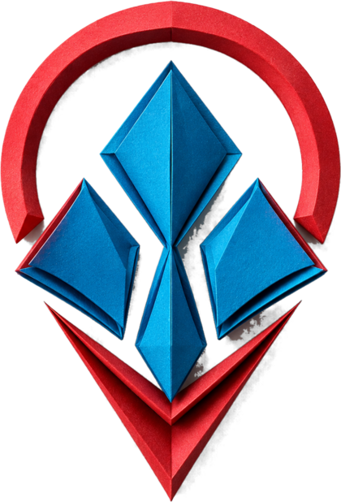

QuantumBerry AI is an applied AI engineering studio in Cape Town. We take a business as it already runs, find where applied AI produces a real return, and build and run the system that delivers it.
The Hermes framework: asynchronous subagents that absorb administrative load across finance, inbox, calendar and reporting.
Operational systems that put live data in front of decision-makers, with role-based access enforced at the data layer.
Evidence-led assessment producing a prioritised, costed roadmap, including an explicit list of what not to build.
Threat assessment, penetration testing, hardening and continuous monitoring, scoped to the infrastructure it protects.
Built as one system, not bought as five. The audit defines what the interface must do. The interface is the agent's front door. Agents inherit the same data and rules. Security is scoped across the whole stack. One team is accountable for all of it.
We build working systems for South African businesses. Not proofs of concept, not slide decks, and not software that makes the business reshape itself around it.
Most studios sell either strategy or hands. We do both, so the person who scopes the work is the person who architects it and the person who answers your email about it. Our delivery model favours AI-augmented engineering over conventional development cycles, and that compression is passed to the client as speed and as cost, not kept as margin.
Everything we build has to survive contact with a real business.
You speak to the person who built it. No account layer in between.
We are small by design and deep by necessity. A studio structure means a client speaks to the engineer, not to an account layer, and work is taken on against real capacity rather than sold first and resourced afterwards.
Five stages, each feeding the next. Nothing is torn up to add the stage that follows it, and every phase ends with a decision point, so commitment is incremental.
| Phase | Focus | Output |
|---|---|---|
| Phase One | Foundational AI Audit | A prioritised implementation roadmap: every opportunity scored for impact, effort and risk, with a defensible cost model attached. |
| Phase Two | Core AI Implementation | Operational interfaces, Hermes agent deployment and cybersecurity hardening, built against the approved roadmap. |
| Phase Three | Optimisation and Scale | Measured tuning, extension across sites or departments, documentation and knowledge transfer. |
Every engagement begins here. Before any commitment to build, we establish where applied AI will produce the clearest return, and equally where it will not.
Every opportunity scored for impact, effort and risk, sequenced so the earliest work funds and de-risks the later work.
Indicative investment attached to each item, so the roadmap can go to a board or budget process without translation.
The items where applied AI will not return, and why. Often the most valuable page in the report.
What is exposed today and what the remediation sequence looks like.
The roadmap is yours on delivery. You are under no obligation to implement it with us, and we would rather hand over an honest roadmap you take elsewhere than sell a build we cannot defend. Audits are custom-scoped, and investment is confirmed in writing before the work begins.
Hermes is our autonomous agent framework, configured per business. It is the studio's flagship, and the clearest expression of acceleration rather than automation.
Hermes runs asynchronous subagents. Instead of working through a queue one task at a time, it monitors incoming information, prepares scheduled work, compiles reporting and routes communication concurrently. Configured properly, it absorbs the administrative load carried by experienced people and returns that time to the work only they can do.
Conversational and voice agents. Alongside back-office agents we build customer-facing agents, including WhatsApp agents for hospitality and service businesses, where the customer never leaves the channel they already use. Voice agents are an active development track.
Exact field mappings, controlled vocabulary and explicit limits, not loose instructions.
Money, new recipients and destructive actions stay behind human confirmation.
Confirmation is removed gradually. Logging and anomaly alerts stay permanent.
Not a brochure site. The place your customers and your staff actually operate from, and the front door your agents work behind.
Answers in your voice, from your real services and terms.
Sorts serious from speculative before it reaches a human.
Rules-based quoting on the spot, inside limits you set.
Into your calendar, with confirmation and reminders.
Staff dashboards over the same live data.
What changed and what to do, not another dashboard.
An agent with access to your inbox, calendar and invoicing holds a serious privilege. Security is engineered into every build, with a dedicated monitoring layer on top.
The stage most suppliers skip. Every engagement lands in a defined care tier with a written allocation, inclusions and turnaround, so the system keeps improving after launch.
Over a decade in technology, Microsoft and CompTIA certified, and a Certified Ethical Hacker, with director-level experience in AI automation and engineering. Chad leads audit, architecture and delivery on every engagement and stays the direct point of contact throughout. He works as both strategist and hands-on builder: the systems described in this document are ones he has personally architected and shipped.
Areas of focus: autonomous agent architecture and multi-agent orchestration; applied AI for business administration; secure system design and access control; AI-augmented delivery engineering.
The studio runs a deliberately small core. Where an engagement calls for co-delivery or specialist tooling, it is structured under a named agreement rather than subcontracted informally, so a client always knows exactly who is touching their systems.
| Partner | Role |
|---|---|
| STRATAIGENT Solutions | Co-delivery partner for joint platform builds, sharing build and reporting workload. |
| Aikido Security | Security tooling partner supporting AI cybersecurity delivery: continuous code, dependency and cloud posture scanning. |
QuantumBerry AI holds NVIDIA developer programme access, including the NVIDIA 6G Developer Program, which provides the AI Aerial platform, the Aerial Omniverse Digital Twin and Sionna, alongside early access to software releases. That access underpins the studio's simulation and physical-AI research direction.
IP transfers on full settlement.
Including what not to build.
Retained care, written turnaround.
A short, no-obligation discussion is all it takes to see whether there is a fit and where the first real return sits.